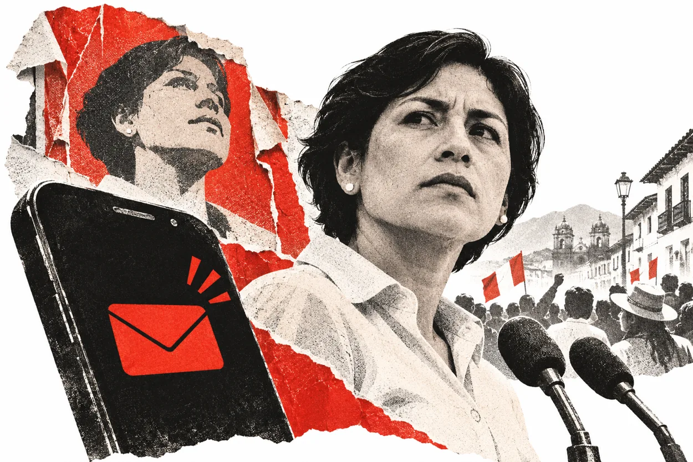

Elecciones regionales y municipales 2026
Amenazas y extorsión contra candidatos
Riesgos electorales, alertas contra candidaturas y denuncias policiales por extorsión en el Perú.
Ver informes

Elecciones regionales y municipales 2026
Riesgos electorales, alertas contra candidaturas y denuncias policiales por extorsión en el Perú.
Ver informes